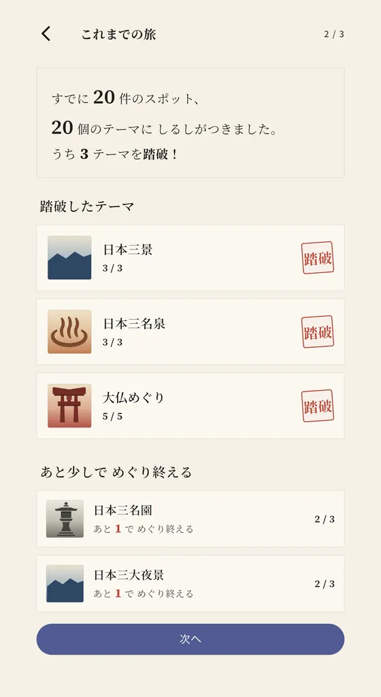

旅のテーマ
日本新三景（新日本三景）とは
日本新三景は、大沼（北海道）・三保松原（静岡県）・耶馬渓（大分県）。「新日本三景」も同じ三か所を指す。湖の小島を歩きたいか、海越しの富士を見たいか、岩峰に囲まれたいかで、次に訪れる候補が変わる。
大正時代に実業之日本社の読者投票で選ばれた三つの景勝地である。松島・天橋立・宮島の日本三景とは別の顔ぶれで、置き換えられたわけではない。名称は似ていても、湖・松原・渓谷を訪ねる新三景と、三つの海景を訪ねる日本三景では、旅の楽しみ方が異なる。
新日本三景 一覧（北から南へ）
| 景勝地名 | 所在地 | 見どころ |
|---|---|---|
| 大沼 | 北海道七飯町 | 駒ヶ岳を背景に、湖面に小島が浮かぶ。大沼公園広場から橋でつながる島々へ歩き出すと、水面と島影を近くに感じられる。湖畔をすべて一周する散策ではなく、島を巡るコースを選んで歩く場所。 |
| 三保松原 | 静岡県静岡市清水区 | 松林から海岸へ出ると、駿河湾越しの富士山を望める。手前の松、海、その先の山という重なりが見どころ。羽衣の松と伝説も残り、世界文化遺産「富士山」の構成資産になっている。 |
| 耶馬渓 | 大分県中津市 | 岩壁や渓谷が各地に広がる景勝地。一目八景では展望台から周囲の岩峰を見渡し、青の洞門では岩壁に人が道を通した跡に出会える。二つは別のエリアなので、何を見るかを決めて訪ねたい。 |

日本三景との違い｜顔ぶれ・選ばれ方・風景
日本三景は松島（宮城県）・天橋立（京都府）・宮島（広島県）。島々が浮かぶ湾、海を隔てる砂州、海辺の社殿という三つの海景である。江戸時代の林春斎の著作に記された評価が由来で、詳しい歴史と各地の観賞方法は日本三景の記事にまとめている。
日本新三景は大沼（北海道）・三保松原（静岡県）・耶馬渓（大分県）。大正時代の読者投票という選ばれ方に加え、湖・海岸・内陸の渓谷と、水辺や山の現れ方にも幅がある。「新」は日本三景より優れた場所という順位ではなく、別の選定を区別する言葉として捉えるとよい。
たとえば松島の島影が好きだった人には、大沼で湖の島々を歩くという次の候補ができる。天橋立の松並木を歩いた人なら、三保松原では松の向こうに海と富士が重なる点を比べられる。水面より岩の形に惹かれる人には耶馬渓が候補になる。これは順位付けではなく、見たい景色から選ぶための提案である。
大沼｜橋を渡り、島と駒ヶ岳の重なりを見る
大沼では、遠くの山を眺めるだけでなく、手前の小島へ歩いて入れる。島巡りの遊歩道は大沼公園広場を起点とし、橋を渡るにつれて水面や木々との位置関係が変わる。駒ヶ岳を背景に島を眺める場所と、木々の間から湖が開ける場所を見比べると、湖の広がりと島の近さを両方楽しめる。
景色の中を自分の足で移動したい人に向く候補である。湖全体を一周するつもりで歩き出すのではなく、公園の案内図から散策コースを選ぶ。冬季の遊歩道は未除雪のため、同じ道を一年中同じ条件で歩けるわけではない。
三保松原｜松・海・富士を一つの眺めにする
三保松原では、松だけ、富士だけを見るより、松原から海岸へ出たときの奥行きに注目したい。松を手前に置くことで、その先の海と富士までが一つの眺めになる。天橋立で砂州全体の形を見る楽しみとは違い、遠景の山と足元の松林を同じ視界に収める楽しみがある。
富士の眺望を目当てにするなら、雲や霞で山が見えない日もあることを織り込んでおく。羽衣の松の周辺や、三保松原と富士を描いた芸術を紹介する「みほしるべ」も候補にすると、山が隠れていても、なぜこの海岸が長く親しまれてきたかを知る入口になる。
耶馬渓｜岩峰の展望か、岩壁に刻まれた道か
耶馬渓は一つの展望台の名前ではない。深耶馬渓の一目八景は、展望台の周囲に特徴ある岩峰が並ぶ場所。山の輪郭や岩と木々の取り合わせを見たいなら、まずここを候補にできる。
本耶馬渓の青の洞門は、禅海和尚による手掘りの跡が残るトンネルである。遠くの岩峰を見渡す一目八景に対し、岩壁の近くで、人がどのように通り道を作ったかを見る場所として選べる。両方を歩いて一続きに回る想定ではなく、エリア間の移動を別に考えたい。
選定の由来と、資料で異なる年の表記
大正期の読者投票による選定だが、年の説明は資料によって異なる。七飯町の町史は1915年（大正4年）に大沼公園が当選したと記し、静岡市の三保松原の案内は1916年（大正5年）の選定としている。この二つの資料だけから「1915年は投票、1916年は発表」と役割を断定することはできない。
一方、三保松原の日本新三景の碑は、静岡市の資料で1918年（大正7年）の建立と確認できる。選定と、それを記念する碑の建立は別の出来事である。年の表記が違っても、この三か所とは別の新三景があるという意味ではない。
めぐり方のヒント
大沼は道南・函館方面、三保松原は静岡・清水方面、耶馬渓は大分県北部の旅に組み込むと考えやすい。一度で三つを回ることを目標にせず、訪れる地方と見たい景色が合う一か所から選ぶ。
公共交通を使う場合、大沼は大沼公園駅を散策の入口に、三保松原は清水方面からのバスを候補にできる。耶馬渓にも路線バスはあるが、青の洞門と一目八景では利用する路線や運行日が異なるため、行きたいエリアを決めてから往復の便を確認する。広い耶馬渓全体を一度に回る前提にしないことが、場所選びの要点になる。
すでに訪れた場所があれば、めぐたびで訪問済みとして記録すると、まだ見ていない景色が次の候補になる。大沼だけ訪問済みなら、次は松原越しの富士か、耶馬渓の岩峰か。離れた土地でも、三つの景色を見比べる旅としてつながっていく。
よくある質問
Q. 日本新三景の覚え方は。
北から「北海道の大沼、静岡の三保松原、大分の耶馬渓」。この記事では、地名に「湖・松原・渓谷」を組み合わせて覚える方法を提案している。歴史的な語呂合わせではなく、場所と景色を一緒に思い出すための整理である。
Q. 三保松原は単独で世界遺産に登録されているのか。
単独の世界遺産ではなく、2013年に登録された「富士山―信仰の対象と芸術の源泉」の構成資産の一つである。日本新三景という選定と、世界遺産としての登録は別の枠組みである。
Q. 大沼と大沼公園は同じ意味なのか。
湖の大沼と、その周辺を含む公園は範囲が異なる。新三景の観光では大沼公園の湖畔や島巡りの遊歩道が入口になるが、湖全体や国定公園全域を一度の散策で回るという意味ではない。
新日本三景を、アプリで集める。
めぐたびは、旅に「行く理由」を与えるテーマ別に全国のスポットを発見・記録・収集する無料アプリ。新日本三景をはじめ73のテーマを収録。行ったことのある景勝地をタップするところから。登録も入力も不要で、いくつ踏破しているか分かります。